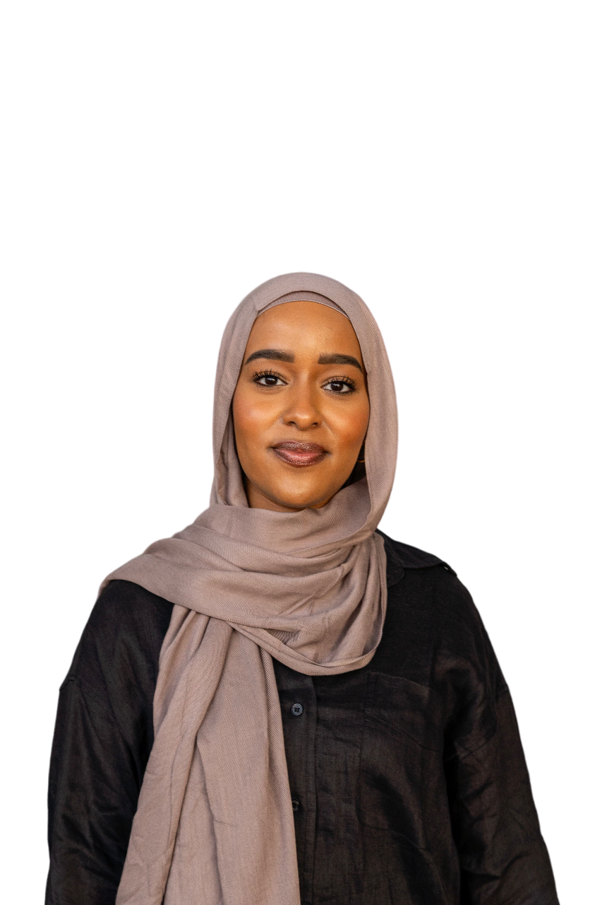

Hi, I'm Rana
Student at the University of Colorado Denver
I'm currently studying Computer Science at the University of Colorado Denver with a minor in business and public health.
My LinkedIn

I'm currently studying Computer Science at the University of Colorado Denver with a minor in business and public health.
My LinkedInI am a senior student delving into Computer Science at the University of Colorado Denver. I made the transition into this field in my third year, seeking a new challenge and a deeper intellectual engagement.
The National Society of Black Engineers has been helpful in my shift to computer science. The support and resources have been crucial in helping me adjust to this new field and stay motivated. Through networking and being part of a dynamic community, I received the encouragement needed to thrive.
Currently, I serve as Vice President of our NSBE chapter. This role has been deeply fulfilling, allowing me to contribute back to the community that supported me and lead initiatives that foster growth and teamwork among our members.
My journey has included challenging coding projects, late-night debugging, and engaging team projects that fuel my passion for learning and creativity. Solving complex problems and seeing them come to life is exhilarating and drives me to keep pushing boundaries. These experiences have taught me resilience and adaptability, key skills as I continue to grow in the tech industry.
If you have any questions or opportunities, please fill out the form below and I will get back to you as soon as possible!